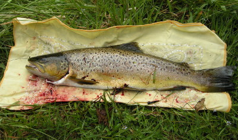

釣行日誌 ＮＺ編 「翡翠、黄金、そして銀塊」
長い闘い
2010/11/29(MON)-3
湧き上がる興奮と緊張を懸命にこらえつつ対岸に渡り、この時のために用意してきたルアー用の10ポンドライン！ をリーダーの先に結ぼうとするのだが、手が震えて上手く結べない。苦労してブラッドノットを仕上げると、わずかに蛍光ブルーに着色されたラインがかなり目立った。しかし、あの調子で小魚を漁っているブラウンなら、このぐらいの色は気にせず、迷わず喰ってくるだろうと思った。
さっき１番上流に見えた魚影から５メートルほど上手の位置に立ち、ここで良いかと対岸で観察しているブリントさんに手真似で聞く。良し！という合図が返ってきたので、水中に滑り落ちてすべてをおジャンにしてしまわないように、細心の注意を払って草ぼうぼうの土手を降り始める。草に掴まり、尻をつきながら徐々に体を下方に降ろして行く。岸辺から流れに立ち込む時も、水音を立てないよう、川底の泥を巻き上げないよう、ごく静かに足を踏み入れた。何と言ってもこちらは鱒たちのすぐ上流なので、少しの攪乱でも連中に気づかれてしまう。速い流れの中に両足が入り、ひっそりと立ち上がってキャストの体勢を整え、対岸のブリントさんを見る。
『そこ、そのあたり...』
彼が無言で指さすあたりを見定め、背後の灌木に引っかけないよう注意して、その少し下流まで届くようにグレイゴーストを投げ込む。距離があまりに短いので、ほとんどリーダーキャストとなっているが、２、３回フォルスキャストしてから振り込む。白いストリーマーが水面に落ち、下流へ流されてラインがピンと伸びる。スイッスイッと、いかにも小魚が泳いでいるようなアクションを付けて真っ直ぐ上流へとリトリーブしてくる。この位置からでは、鱒の姿はまったく見えない。おおよそあの辺りかな？と見当を付けた場所をフライが通過した瞬間、
「オーウッ！」
とブリントさんが声を上げる。どうやら鱒がフライを喰い損なったらしい。手元までリトリーブして、再びキャスト。岸から10cmほどしか離れていない、流れの緩い筋を狙ってストリーマーを通す。
「クソッ！もう少しっ！」
土手の上から罵声が聞こえる。鱒が追ったようだが、またも咥え損なったようだ。５尾も居るんだからどいつか喰いつけよ！と念じてみたびキャスト。しかし、ロッドを持つ左手が土手側になっているので非常にキャストしづらい。竿を傾け、右肩越しになんとかフライを下流へと飛ばす。急流がグレイゴーストを飲み込み、左側の細く緩い筋へと流して行く。右手でラインを引っ張り、クイックイッとアクションを付ける。
「オオゥ！なんてこったっ！」
上流を向いて定位している鱒をフライが下流から追い越すことになるので、どうしても鱒の反応が遅れるらしい。やはり蛍光色の付いたティペットがいけないのか？ いまさら気にしてもしょうがないので、キャストを繰り返す。
ゴツン！ 不意に衝撃が伝わる。
「ストラーイクッ！」
ブリントさんが叫ぶ。竿を立て、ラインを引いて合わせを入れる。いきなり鱒が反転して下流へダッシュする。茶色の魚影はそれほど大きくはない。しかし流れは強く、流心に入った鱒は、下流の藪下へ逃げ込もうとドラグを鳴らしてラインを引き出して逸走する。荒々しい流れの力を利用して抵抗する鱒の力はとんでもなく強い。
『これは困ったぞ....』
このスプリングクリークは、河道がほぼ直線状で両岸がいきなり土手になっており、鱒をランディングする水辺のスペースが無い。ランディングネットを持っているブリントさんは、鱒がそれほど大きくないことを見てとり、対岸の土手の上に立ったまま状況を見つめるだけで、こちらに来て手助けしてくれる気配は無い。おそらくランディングでバシャバシャやると、他の大物４尾が散ってしまうことを懸念しているのだろう。さすれば自力でこのパワー溢れる鱒をハンドランディングするしかない。幸い、そのブラウンはラインをどんどん引き出してはるか下流へ向かうことはせず、灌木の下あたりで激流の流心に留まり、じっとこらえている。
ロッドを立ててひたすら重みに耐えながら、鱒の疲れを待つ。しかし、ブラウンはその魚体を対岸の流れの中で斜めに保持したまま、激流と自分の体とが生み出す揚力を巧みに利用して抵抗を続けている。リールを５、６回巻いてはまたラインを引き出され、が何回も繰り返される。蛍光ブルーの10ポンドティペットが水面に突き刺さっている。その先の魚影はほとんど動かない。鱒と釣り人との根比べになった。糸の強度は十分だ。後は焦らないこと。下流に歩み下ってもいいが、下手の両岸は灌木が茂っており、ランディングには都合が悪い。その上、さらに大きな鱒が４尾も居るポイントを荒らしてしまうことになる。
懸命に持久戦を耐え抜いていると、徐々に鱒が寄ってきた。どうやらフッキングは十分だったらしく、鱒の口の横に白いストリーマーが見えた。しかしブラウンが１番流れの速い流心に入ると、再び力を取り戻し、ラインがリールから引き出される。
『この魚はキープだな...』
激しいファイトがこれだけ長く続いては、リリースしても生き延びるのは難しいだろうと思えた。
とても長い間鱒と闘っているような気がしたが、実際のところは５分くらいだったろうか。根が生えたように動かなかった鱒が、ロッドをゆっくりあおるとこちらを向くようになった。流心を横切り、こちら岸に鱒を誘導する。ラインを巻き取り、足元まで寄せてくる。すると、人の姿に驚いたブラウンが最後の力を振り絞って再び下流へと逃げる。ドラグが鳴ってラインが引き出される。その繰り返し。
しかし、体格の割りに驚異的なパワーで抵抗していたブラウンも、とうとう弱り果てた。水面で体を力無く伸ばし、ロッドを傾ける方向に素直に頭を向ける。余分なティペットを巻き取り、寄せてきた鱒の腹を右手で抱えて草の上に放り上げる。ロッドを傍らに置き、頭を押さえてフックを外す。エラの下側を指で裂き、魚体を膝に挟んでしっかりと保持し、後頭部に両方の親指を当てて人差し指を口に入れ、グイッと力を入れて首の骨を折ってシメる。もう一度草むらに横たえると、折れた脊椎のそばの動脈から、死にゆく鱒の心臓の鼓動に合わせてプシューッと血しぶきが上がる。２度、３度。偏光グラス越しに見えたその血液の鮮やかな赤色が、僕の網膜に焼き付いた。何かを暗示しているような光景だった。
息絶えた鱒を持って静々と土手をへずり上がり、空き地にバンダナを敷いて魚体を横たえた。鮮血が飛び散り、黄色い布地に点々と染みを作った。その、あまりに鮮やかな血の赤は、僕の心の奥深くにある「死の予感」と呼応して輝いていた。僕は肩で息をつきながら、食卓へ登る運命となった鱒を見つめた。

気が付くとブリントさんがそばまで来ており、
「とうとうやったなぁ！」
と声を掛けてくれた。長い闘いだった。この鱒ではなく、もしも別の大物が喰いついていたら、ランディングできたかどうか、自信は無かった。
釣行日誌ＮＺ編 目次へ
サイトマップ
ホームへ
お問い合わせ